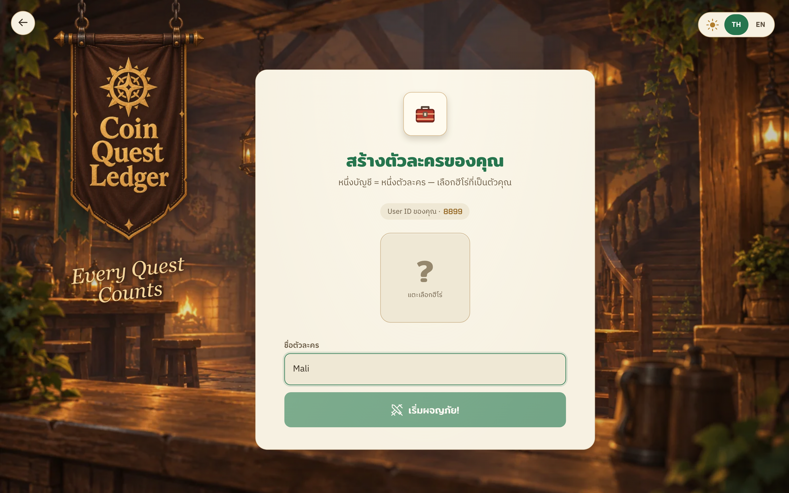
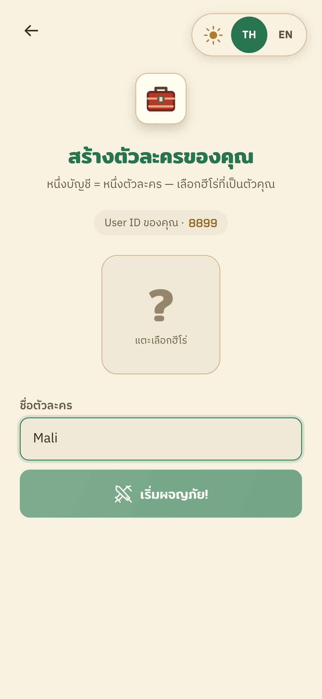
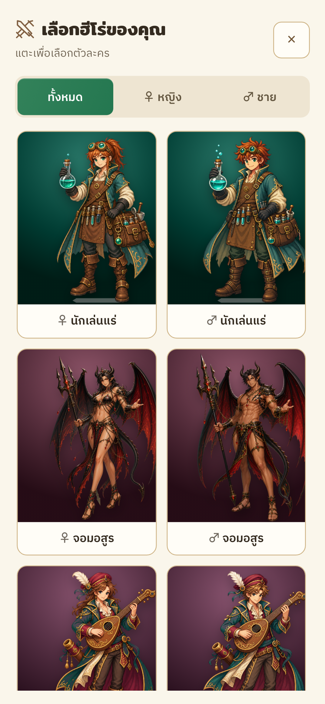

Reference app areas cropped from the supplied annotated mockup, scaled proportionally to comparable widths. Local browser captures: 1440 × 900 and 390 × 844; Thai, test account, no saved hero. Actual 18 classes retained. Reference viewport heights are inferred; no pixel-parity claim.



Local / · Chromium responsive/touch fixtures · Source identity and checks in README.md and manifest.json. Existing Tavern and hero assets reused. Screenshots depict the real frontend with Firebase transport mocked; no production data changed.